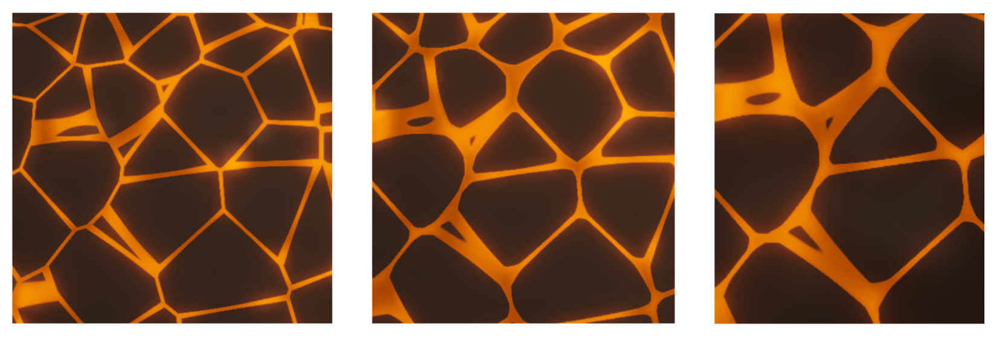
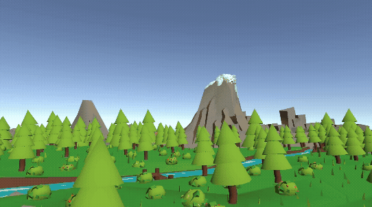

3D Rendering Project3D 渲染项目
Why为什么做
What做了什么
Unity URPHLSLC#Procedural NoiseWorld-space Masks
How如何实现
My contributions (Terrain Transformation)我的贡献（地形变换）
- Procedural lava & cracks shader (HLSL): Built a terrain material that blends from normal ground to molten lava using 3D Worley noise for organic crack boundaries.
- 程序化熔岩与裂缝着色器（HLSL）：构建了一种地形材质，利用 3D Worley 噪声生成自然的裂缝边界，从普通地面平滑过渡到熔融熔岩。
- Corner rounding for Worley junctions: Standard Worley borders can create sharp, unnatural corners at cell junctions. I used the third-nearest distance (F3) to compute a corner metric and widen cracks near junctions, producing rounded lava "veins."
- Worley 交界处的圆角处理：标准的 Worley 边界会在单元交界处产生尖锐、不自然的拐角。我使用第三近距离（F3）计算拐角度量，并在交界附近加宽裂缝，从而形成圆润的熔岩“脉络”。
- Surface micro-detail: Added controllable normal perturbation (Worley + Perlin-style noise) to avoid a flat/plastic feel and improve lighting response.
- 表面微观细节：加入可控的法线扰动（Worley + Perlin 风格噪声），避免出现扁平/塑料感，并改善光照响应。

- World-space spherical reveal mask: Implemented a
smoothstep-based mask using distance-to-impact-center with radius + feather controls, then used that mask to lerp between the original terrain and lava shader outputs. - 世界空间球形显现遮罩：基于
smoothstep实现了一个遮罩，使用到撞击中心的距离并配以半径 + 羽化控制，再用该遮罩在原始地形与熔岩着色器输出之间进行插值。 - C# runtime control: Drove shader parameters every frame (center, radius, feather) using MaterialPropertyBlock so multiple objects can share a material while still receiving per-instance reveal behavior.
- C# 运行时控制：使用 MaterialPropertyBlock 每帧驱动着色器参数（中心、半径、羽化），使多个对象可以共享同一材质，同时仍获得逐实例的显现表现。
- Fade-out variant: Implemented a complementary transparent fade shader using the same world-space mask logic (useful for "clearing" geometry inside the shockwave region).
- 淡出变体：使用相同的世界空间遮罩逻辑实现了一个互补的透明淡出着色器（可用于“清除”冲击波范围内的几何体）。

Outcomes成果
Team system context团队系统背景
- Procedural asteroid generation (vertex displacement + heightfield-driven normals)
- 程序化小行星生成（顶点位移 + 高度场驱动的法线）
- Velocity-reactive asteroid lighting (emission + Fresnel rim "burn")
- 随速度响应的小行星光照（自发光 + 菲涅尔边缘“灼烧”）
- Impact frame post-processing (edge detection + radial blur + polar noise "speed lines")
- 撞击帧后处理（边缘检测 + 径向模糊 + 极坐标噪声“速度线”）
- Shockwave bubble shader (depth intersection + Fresnel + heat distortion)
- 冲击波气泡着色器（深度相交 + 菲涅尔 + 热浪扭曲）
What worked well做得好的地方
- Readable, stylized “lava reveal”: The world-space mask + Worley cracks made the shockwave feel like it physically alters the terrain.
- 清晰而风格化的“熔岩显现”：世界空间遮罩 + Worley 裂缝让冲击波仿佛真的在物理改变地形。
- More natural crack topology: Corner rounding reduced sharp triangular junctions common in basic Worley borders.
- 更自然的裂缝拓扑：圆角处理减少了基础 Worley 边界中常见的尖锐三角形交界。
- Reusable control pattern: MaterialPropertyBlock-based driving is engine-friendly and scales to multiple affected surfaces.
- 可复用的控制模式：基于 MaterialPropertyBlock 的驱动方式对引擎友好，并能扩展到多个受影响的表面。
Limitations & next steps局限与后续计划
- The micro-normal detail was tricky to balance; in the final render we reduced the detail scale to avoid noisy lighting. Next, I’d tune a sharper normal pattern that still reads cleanly in motion.
- 微观法线细节的平衡比较棘手；在最终渲染中，我们降低了细节强度以避免光照出现噪点。接下来，我会调出一种更锐利、在运动中仍然清晰可读的法线图案。
- I’d also like to expose a small “art direction” panel (crack width, junction rounding strength, lava pulse speed) for faster iteration.
- 我还希望开放一个小巧的“美术调控”面板（裂缝宽度、交界圆角强度、熔岩脉动速度），以加快迭代。